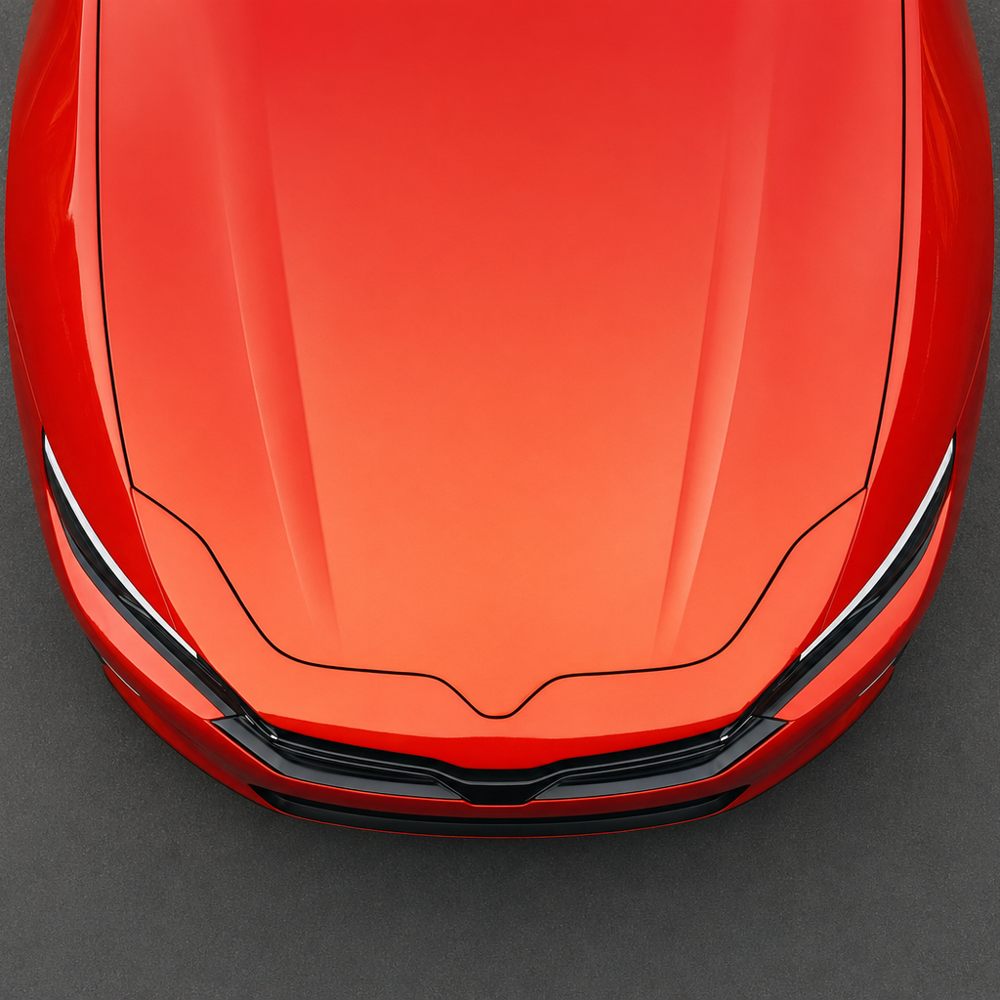
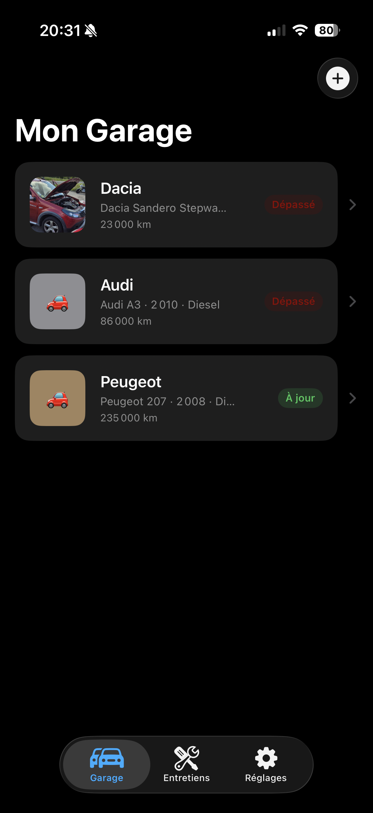
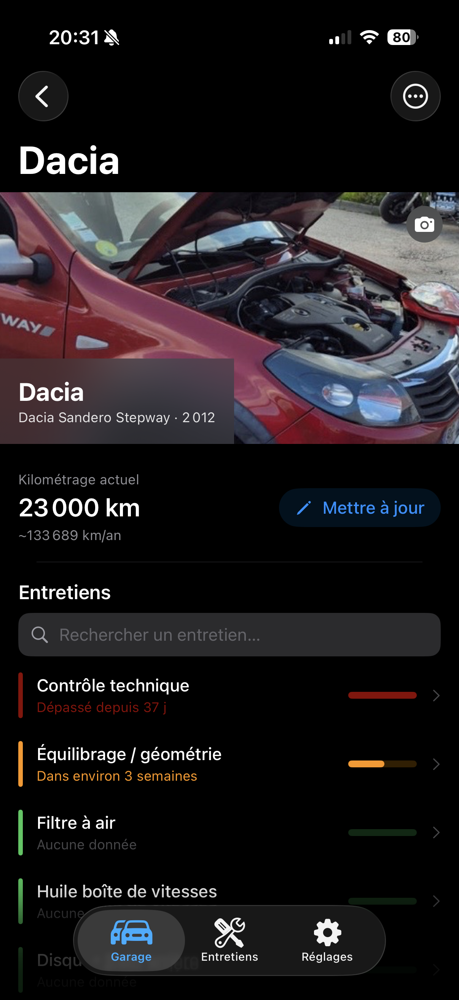
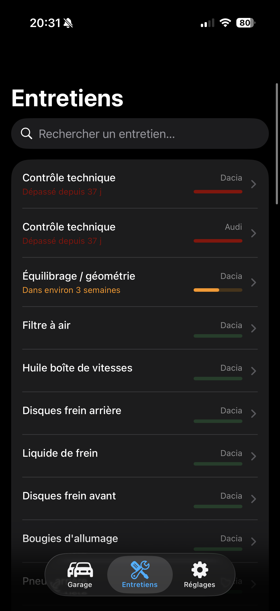
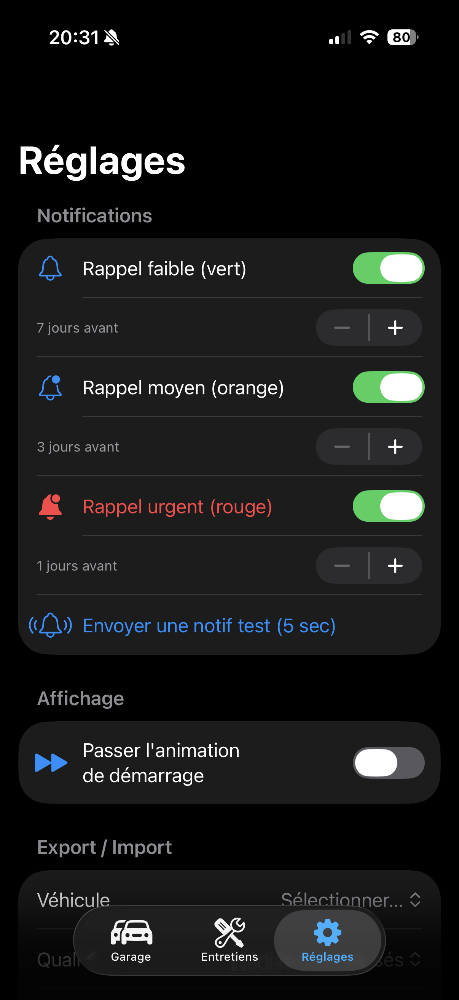

Capot
Votre carnet d'entretien automobile intelligent et prédictif.




01. Le Concept
Capot est l'allié indispensable de tout propriétaire de véhicule. L'application permet de centraliser tout l'historique d'entretien d'un parc automobile personnel (voitures, motos, utilitaires) de manière simple et totalement déconnectée.
Le point fort de Capot est son algorithme de prédiction : en fonction de votre kilométrage annuel moyen, l'application anticipe les dates des prochaines interventions (vidange, courroie, pneus) avant même que vous n'y pensiez.
02. Fonctionnalités Clés
Scoring d'Urgence
Un code couleur immédiat (Vert, Orange, Rouge) pour savoir ce qui doit être fait en priorité.
Garage Multi-Véhicules
Gérez autant de véhicules que vous le souhaitez, chacun avec ses propres spécificités d'entretien.
Export PDF complet
Générez une fiche propre de l'historique de votre véhicule, idéal pour une revente ou un passage au garage.
Zéro Donnée Cloud
Aucune création de compte. Vos données vous appartiennent et ne quittent jamais votre iPhone.
Stack Technique
- Langage Swift
- Interface SwiftUI
- Persistance SwiftData
- Architecture MVVM
- Outils XcodeGen, SwiftLint
Innovation
Design iOS 26
Utilisation expérimentale des derniers principes de design pour une immersion totale et une clarté d'information maximale.